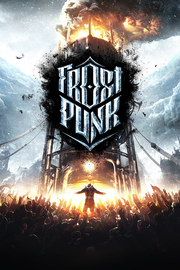

Frostpunk
Detalles
|  | |
| Tiempo de juego | No Jugado |
| Última actividad | Nunca |
| Añadido | 11/5/2024 22:37:13 |
| Modificado | 11/17/2024 15:25:17 |
| Estado de finalización | No Jugado |
| Librería | Playnite |
| Fuente | 1 TB 1 |
| Plataforma | PC (Windows) |
| Fecha de lanzamiento | 4/24/2018 |
| Puntuación de la Comunidad | 91 |
| Puntuación de la Crítica | 84 |
| Puntuación de usuario | |
| Género | Estrategia Simuladores |
| Desarrollador | 11 bit studios |
| Editor | 11 bit studios |
| Característica | Cloud Saves Cromos De Logros De Préstamo Familiar Remote Play En Móvil Remote Play En Tableta Un Jugador |
| Enlaces | Punto de encuentro Discusiones Guías Noticias Página de la tienda PCGamingWiki Logros |
| Tag | Ambientales Construcción Construcción de bases Construcción de ciudades Difíciles Economía Estrategia ETR Gestión Gestión de recursos Gran banda sonora Las elecciones importan Oscuros Posapocalípticos Simulación Simulador de colonias Steampunk Supervivencia Tiempo real con pausas Un jugador |
Descripción
EL FINAL DEL CAMINO
Desde el lanzamiento de Frostpunk, lo hemos actualizado varias veces con contenido adicional. Ahora puedes disfrutar del nuevo Endless Mode (modo Infinito), que aumenta las rejugabilidad y ofrece tres formas de jugarlo. También hay un nuevo escenario, The Fall of Winterhome (La caída de Invernia), que amplía aún más el universo del juego y la información disponible. De postre hemos añadido detalles como la posibilidad de poner nombre a los personajes y autómatas y, por último, un modo Foto. Todo esto está disponible gratis con el juego base. Además, hay tres expansiones, disponibles con el Season Pass de pago. Queremos aprovechar para comentar que no vamos a crear más contenido para Frostpunk, ya que este viaje ha llegado a su fin, pero esperamos que estéis pendientes de otros juegos que publicaremos en el futuro. Naturalmente, el juego seguirá recibiendo parches, correcciones de problemas y soporte técnico.
SEASON PASS
¡El contenido del Season Pass oficial de Frostpunk ya está disponible en su totalidad! Te permite acceder a todo el contenido adicional publicado desde el lanzamiento del juego, incluidas tres expansiones: The Last Autumn (El último otoño), On The Edge (Al límite) y The Rifts (Las Fosas), que amplían enormemente la historia principal y completan un montón de vacíos en el universo del juego. Además, cuando termines de jugar, podrás relajarte mientras escuchas la, con su imponente orquesta, o descubrir más cosas sobre el mundo del juego con el libro de diseños digital exclusivo.¿No tienes el juego? No te preocupes, porque Frostpunk: Game of the Year Edition es justo lo que buscas. Incluye el juego base, el Season Pass y todo el contenido exclusivo a precio rebajado.
ACERCA DEL JUEGO

LA CIUDAD DEBE SOBREVIVIR
Frostpunk, el título más reciente de los creadores de This War of Mine, es un juego de supervivencia en sociedad donde el calor es fuente de vida y cada decisión tiene un precio. En un mundo totalmente congelado, la humanidad ha desarrollado una tecnología basada en el vapor para hacer frente al frío implacable. Tu tarea consiste en construir la última ciudad de la Tierra y conseguir los recursos necesarios para que tu comunidad sobreviva.
La gestión de recursos y su optimización a menudo chocan con la empatía y con las decisiones razonables. Aunque la administración de la ciudad y de su sociedad consume la mayor parte del tiempo del gobernante, llega un punto en el que se hace necesario explorar el mundo exterior para comprender su historia y su situación actual.
¿Qué decisiones tomarás para asegurar la supervivencia de tu sociedad? ¿Qué harás cuando estés entre la espada y la pared? ¿En qué te convertirás durante el proceso?
CREA LAS LEYES
Promulga leyes que regulen la existencia de tu sociedad en desarrollo. Decide cuál será su horario de trabajo, su sistema sanitario, el abastecimiento de comida y otros aspectos cruciales de la vida cotidiana. Hacer que estén contentos y que mantengan la esperanza es algo tan importante para una sociedad como protegerla y obtener los bienes de primera necesidad que la alimentan.
MOLDEA TU SOCIEDAD
Si llegas a un punto de inflexión, no dudes en decidir el camino que tu gente debe seguir. ¿Deberías gobernar con mano de hierro... o mostrarles el camino de la compasión y la fe? Encuentra el equilibrio o decántate por los extremos. Hagas lo que hagas, recuerda que no hay vuelta atrás.
SOPESA TUS DECISIONES
Algunas de tus decisiones parecerán insignificantes, como decidir el destino de un ciudadano preocupado o satisfacer las peticiones de una nueva facción, pero ten en cuenta que la suma de tus acciones puede tener resultados inesperados. Tu gente ha depositado su confianza en ti, pero su devoción tiene un límite. El liderazgo puede llegar a ser una carga.
DESARROLLA NUEVAS TECNOLOGÍAS
Para sobrevivir hay que progresar. Reacciona a los sucesos que se produzcan, pero piensa siempre a largo plazo e invierte en el desarrollo y en el avance tecnológico. Conseguir infraestructuras avanzadas con autómatas autopropulsados, aeronaves y otras maravillas de la tecnología no es fácil, pero tampoco imposible. Todo depende de tus capacidades de gestión y liderazgo.
EXPLORA TIERRAHELADA
Aunque Nueva Londres es tu objetivo principal, fuera de los límites de la ciudad hay muchas cosas por descubrir. Las expediciones, aunque sean arriesgadas, pueden conseguir valiosa información, suministros muy necesarios y aumentar la población de tu sociedad. Puede que haya gente ahí fuera; su destino está en tus manos.
JUEGA ETERNAMENTE
El modo Infinito de Frostpunk aporta un rejugabilidad sin límites. Juega en 8 mapas con distintas condiciones climatológicas, orografía y desafíos a los que enfrentarte. Sabemos que cada uno busca su propia experiencia, así que hemos incluido 3 variantes en el modo Infinito. Resistencia es la prueba definitiva de tu capacidad de gestión, construcción y supervivencia en las condiciones más duras. En Constructores no dispondrás de un generador al principio, así que el desafío cambiará por completo. Y, por último, Serenidad, que se centra en disfrutar de la construcción de la ciudad propiamente dicha, sin presiones innecesarias.